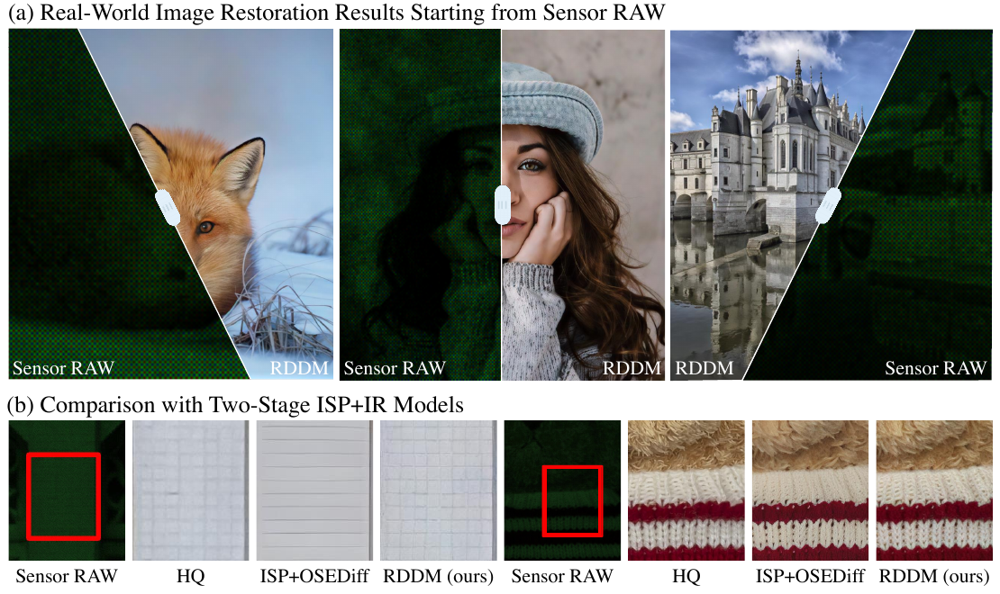
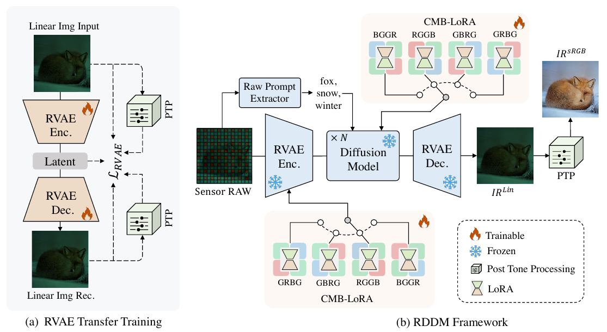
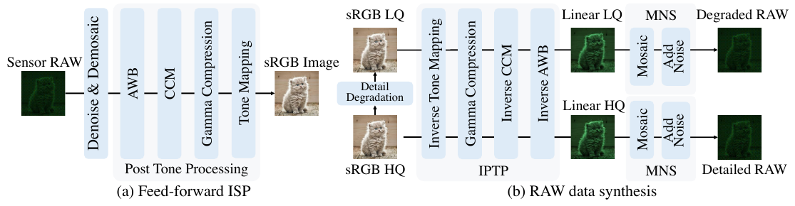
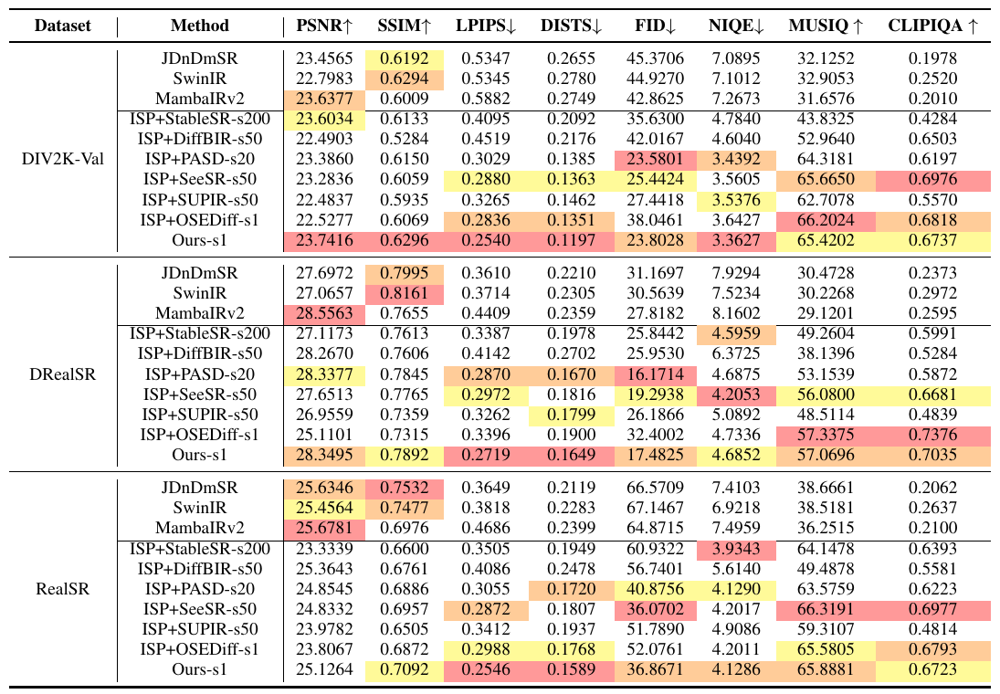
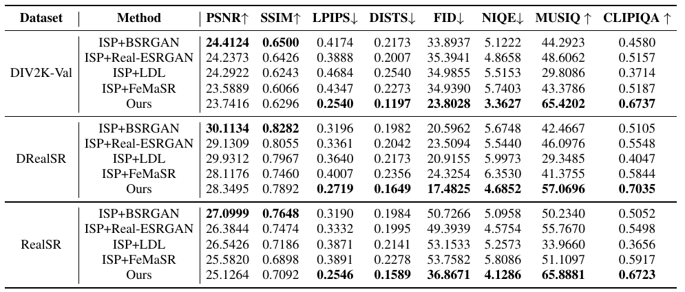
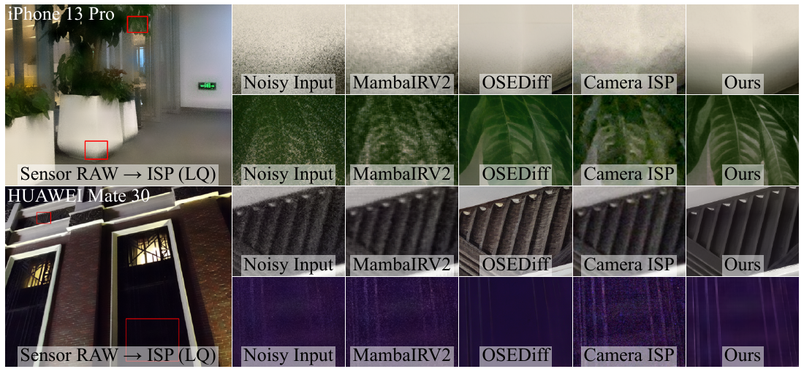
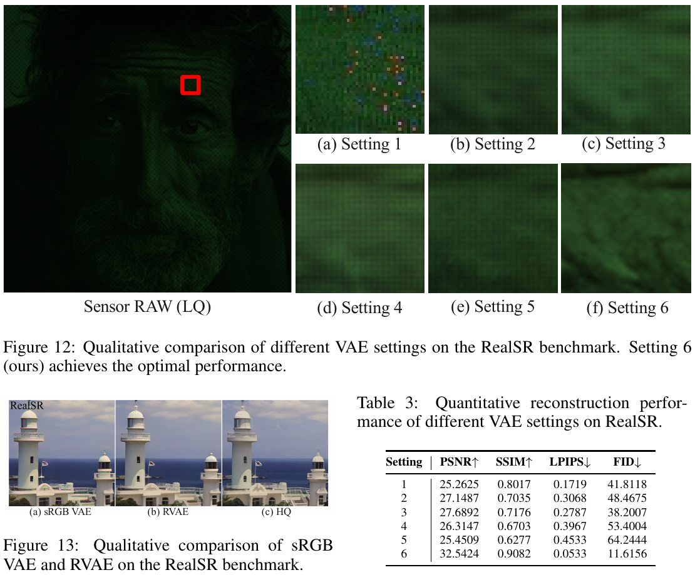
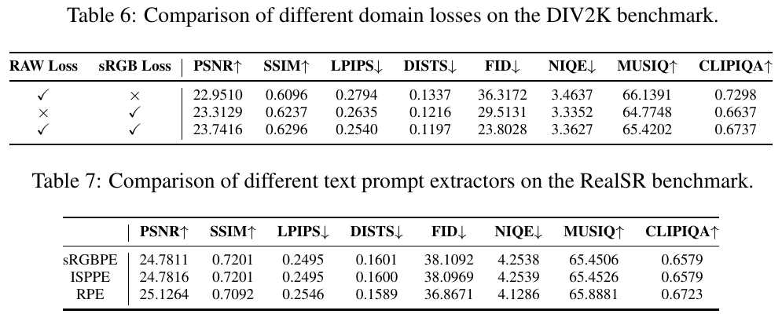

RDDM: Practicing RAW Domain Diffusion Model for Real-world Image Restoration

读前说明：本页属于专项「手机照片 → 相机画质：细节与质感迁移」（入口 phone2camera-2026）。专项想要的形态是：在线性 RAW 域里由生成模型补纹理，颜色用 DNG 矩阵做物理映射，最后交给目标相机的 ISP 出图。调研页原先把 RDDM 列为「相邻工作」，一句话概括成「RAW→RAW」。精读后要更正一点：RDDM 的输出不是 Bayer RAW，而是去马赛克后的 3 通道线性图，位于白平衡和 CCM 之前的相机色彩空间。这正好是 Linear DNG 能装的内容，所以它仍然是专项最接近的公开工作。本页重点回答三件事：RAW 域 VAE 怎么训、多 Bayer LoRA 解决了什么、它补出来的纹理从哪里来。
代码说明：论文摘要写「Codes will be publicly available at github.com/YanCHEN-fr/RDDM」。这个仓库确实存在，README 写 2025-11 创建，最后一次推送是 2026-02-12（commit
30aa688），但到 2026-11-04 为止只有 README、LICENSE 和 8 张结果图（repo/即这份克隆）。README 里的train.sh、test.sh、requirements.txt都不存在，GitHub 搜索也没有其他实现。论文的训练配方几乎逐项对得上 OSEDiff（§2.2），所以本页代码分三类：OSEDiff 的生成器与 VSD 损失逐字引自 cswry/OSEDiff（commitcdd3b7b，克隆在repo-osediff/）；RDDM 声称「在其基础上修改」的逆 ISP 逐字引自本站 unprocessing-2018 页克隆的timothybrooks/unprocessing（commit9928956）；RDDM 自己的改动一律写成按论文公式整理的等价伪代码，出处行标明。
任务
输入单通道 Bayer 马赛克（带噪、带模糊），一步扩散输出 3 通道线性图（相机空间、未白平衡），再经 PTP（白平衡 → CCM → gamma → 色调）转 sRGB 评测。去噪、去马赛克、补细节合成一步。
方法
OSEDiff 骨架（SD 2.1，一步，VSD 正则）+ 三处改动：VAE 先在线性图上重训再冻结；编码器和 UNet 上按 4 种 Bayer 排列各挂一组 LoRA；损失在线性域 MSE 和 sRGB 域 MSE+LPIPS 双域监督。
数据
LSDIR + FFHQ 10K 的 sRGB 图：先按 Real-ESRGAN 做模糊/缩放退化（去掉 JPEG 和噪声），再按 Unprocessing 的思路逆色调、逆 gamma、逆 CCM、逆白平衡到线性，最后马赛克 + 异方差高斯噪声。
证据强弱
定量结果全部在自建的合成基准上；真实 RAW（DND、SIDD、RealCapture）只有图。GAN 两阶段在 PSNR 上全面领先 RDDM；提示词消融的结论与表格不符；仓库无代码。
术语速查
Real-IR
真实世界图像复原：输入的退化未知且混合（模糊、噪声、压缩、下采样），目标是「看起来真」，不只是 PSNR 高。
OSEDiff
一步扩散超分（NeurIPS 2024）：在 SD 2.1 的 VAE 编码器和 UNet 上挂 LoRA，LQ 潜变量当作 t=999 的噪声潜变量一步去噪，用 VSD 把输出拉向 SD 的自然图先验。
VSD
变分分数蒸馏：用一个冻结的预训练扩散模型当「真实分布的分数」，一个随训练更新的 LoRA 副本当「生成分布的分数」，两者之差作为梯度推生成结果。
RVAE
RDDM 的 RAW 域 VAE：先用线性图做重建训练（输入输出都是线性图），第二阶段冻结权重，只在编码器上加 LoRA 让它吃马赛克。
CMB-LoRA
Configurable Multi-Bayer LoRA：按 Bayer 排列（RGGB/BGGR/GBRG/GRBG）各训一组 LoRA，推理时按输入的排列选用哪一组。
PTP / IPTP
Post Tone Processing：白平衡 → CCM → gamma → 色调映射，把线性图转 sRGB，可微。IPTP 是它的逆，用来把 sRGB 数据集转成线性图。
MNS
Mosaic Noise Synthesizer：把 3 通道线性图按 CFA 抽成单通道马赛克，再加「散粒 + 读出」异方差高斯噪声。
DAPE
SeeSR 提出的退化感知提示词提取器（基于 RAM 微调），从退化图里抽出「fox, snow, winter」这类标签当文本条件。OSEDiff 沿用了它。
1. 出发点：sRGB 输入已经丢了信息，扩散模型却只会在 sRGB 里工作
扩散式 Real-IR（StableSR、SeeSR、SUPIR、OSEDiff…）都在 sRGB 上工作。论文的论点是：ISP 把 12–14 bit 的 RAW 压成 8 bit sRGB，去噪、锐化、色调映射都是不可逆的，复原模型拿到的是已经被处理过的输入，上限被 ISP 定死了 [§1]。如果把复原挪到 ISP 前端，模型就能看到「原始光学与物理信号」。
把预训练 T2I 模型直接搬进 RAW 域有两个障碍 [§1]：
- 分布差异：RAW 是线性的、偏暗、偏绿（未白平衡），还是单通道马赛克。SD 的 VAE 从没见过这种图，Fig. 2 画的是两者的像素值直方图完全错开。
- 跨设备泛化：不同传感器的 Bayer 排列和噪声特性不同。
论文把现有做法形式化为两阶段，自己的做法形式化为一阶段：
—— 翻译: 左边是「先让 ISP 把 RAW 变成 sRGB，再让 sRGB 复原模型修」；右边是「先让 RAW 复原模型把 RAW 修成干净的线性图，再用一个固定的色彩/色调模块转成 sRGB」。区别在于生成模型站在 ISP 的前面还是后面。
这里有一个读者容易忽略的细节：\(G_\theta^{raw}\) 的输出是 \(\hat{X}_H^{lin}\in\mathbb{R}^{h\times w\times 3}\) [Eq. 1]，是 3 通道、全分辨率的线性图，去马赛克已经在网络里完成了。按附录 Fig. 15 的合成流程，这个「线性 HQ」位于逆 CCM、逆白平衡之后，也就是相机原始色彩空间、白平衡之前（Fig. 1 和 Fig. 5 里的线性图都偏绿）。所以 RDDM 是「RAW → 线性 RGB」，不是「RAW → RAW」。
2. 方法：OSEDiff 骨架 + 线性域 VAE + 按排列切换的 LoRA

2.1 问题设定与训练目标
训练是标准的有监督回归加生成正则 [Eq. 1]：
—— 翻译: 从配对数据集 S 里取一对「退化的单通道 RAW」和「干净的 3 通道线性图」，让网络从 RAW（加一个噪声种子 ε）预测线性图，与真值算损失，找使平均损失最小的参数。配对数据 S 全部是合成的（§2.5）。
类比：两阶段方案像是先让一个普通冲印师把底片冲成照片，再让修图师修照片；RDDM 是让修图师直接拿底片工作，最后才按固定配方冲印。这样修图师能看到冲印前的全部信息，但也必须自己学会「冲印师原来做的那部分」，也就是去噪和去马赛克。
2.2 底座：OSEDiff 的一步生成器
论文没有说自己基于哪份代码，但能对上的细节太多了：SD 2.1 骨架、8× 下采样的 VAE [§5]；一步推理（表 2 记为 Ours-s1）；VAE 编码器和扩散网络上挂 LoRA、rank = 4；AdamW、学习率 5e-5、批量 16 [§4.1]；VSD 损失 [Eq. 7]；DAPE 提示词 [§3.2, §4.1]。表 2 里 RDDM 的参数量 1294M、FLOPs 250G，与 ISP+OSEDiff-s1 的 1298M、250G 几乎相同。OSEDiff 的默认配置是学习率 5e-5、LoRA rank 4、每卡批量 4 × 梯度累积 4（repo-osediff/train_osediff.py:L62-L68, L118）。
OSEDiff 只给 VAE 的编码器挂 LoRA，解码器保持原样：
repo-osediff/osediff.py:L17-L36 — initialize_vae：VAE 整体冻结，只在 encoder 的卷积和注意力层（含 conv_in、quant_conv）上挂 rank-r LoRA
def initialize_vae(args):
vae = AutoencoderKL.from_pretrained(args.pretrained_model_name_or_path, subfolder="vae")
vae.requires_grad_(False)
vae.train()
l_target_modules_encoder = []
l_grep = ["conv1","conv2","conv_in", "conv_shortcut", "conv", "conv_out", "to_k", "to_q", "to_v", "to_out.0"]
for n, p in vae.named_parameters():
if "bias" in n or "norm" in n:
continue
for pattern in l_grep:
if pattern in n and ("encoder" in n):
l_target_modules_encoder.append(n.replace(".weight",""))
elif ('quant_conv' in n) and ('post_quant_conv' not in n):
l_target_modules_encoder.append(n.replace(".weight",""))
lora_conf_encoder = LoraConfig(r=args.lora_rank, init_lora_weights="gaussian",target_modules=l_target_modules_encoder)
vae.add_adapter(lora_conf_encoder, adapter_name="default_encoder")
return vae, l_target_modules_encoder
这正是 RDDM 第二阶段「冻结编码器和解码器，只在编码器上加 LoRA」[§3.2] 的样子。区别在于 RDDM 的 VAE 权重不是 SD 原版，而是第一阶段在线性图上重训过的版本（§2.3），并且一组 LoRA 变成了四组（§2.4）。
一步生成本身很简单：LQ 编码出的潜变量直接被当作 t = 999 时刻的「带噪潜变量」，UNet 预测一次噪声，调度器走一步，再解码：
repo-osediff/osediff.py:L117-L129 — OSEDiff_gen.forward：编码 → UNet 在固定 t=999 上预测一次 → 调度器一步 → 解码
def forward(self, c_t, batch=None, args=None):
encoded_control = self.vae.encode(c_t).latent_dist.sample() * self.vae.config.scaling_factor
# calculate prompt_embeddings and neg_prompt_embeddings
prompt_embeds = self.encode_prompt(batch["prompt"])
neg_prompt_embeds = self.encode_prompt(batch["neg_prompt"])
model_pred = self.unet(encoded_control, self.timesteps, encoder_hidden_states=prompt_embeds.to(torch.float32),).sample
x_denoised = self.noise_scheduler.step(model_pred, self.timesteps, encoded_control, return_dict=True).prev_sample
output_image = (self.vae.decode(x_denoised / self.vae.config.scaling_factor).sample).clamp(-1, 1)
return output_image, x_denoised, prompt_embeds, neg_prompt_embeds
放到 RDDM 里，c_t 换成单通道马赛克，self.vae.config.scaling_factor（SD 的 0.18215）换成式 (5)–(6) 重新统计的 \(1/\sigma\)，vae.decode 的输出从 sRGB 变成线性图。注意 self.vae.encode 的第一层 conv_in 期望 3 通道输入，单通道马赛克怎么喂进去（复制三份？按 CFA 放进三个稀疏通道？），论文没有说。
2.3 RVAE：先教 VAE 说「线性」，再冻结
预训练的 sRGB VAE 重建线性图效果很差，解码出来颜色偏、质量低 [§3.2]。RDDM 的办法分两阶段。
第一阶段（Fig. 5a）：编码器和解码器都可训练，输入是线性 HQ，目标是把它原样重建出来 [Eq. 4]：
—— 翻译: 重建损失（L1 + LPIPS，其中 L1 在线性域和经 PTP 转出的 sRGB 域各算一次）加上对抗损失。对抗损失的权重是自适应的：用两种损失在解码器最后一层上的梯度大小之比来定，保证对抗项不会压过重建项。这是 LDM 训练 VAE 的原配方。
训完之后重新统计潜变量的尺度 [Eq. 5–6]：
—— 翻译: 把训练集所有线性图编码后的潜变量摊平，算均值和方差，然后把潜变量除以标准差，让它的尺度接近标准高斯。SD 原版的 0.18215 就是这样算出来的；换了 VAE，这个数也得重算。注意只除 σ，不减 μ̂。
第二阶段：冻结第一阶段的编码器和解码器，只在编码器上挂 LoRA，同时在扩散网络上挂 LoRA，用「马赛克 RAW → 线性 HQ」配对联合训练 [§3.2]。解码器从此不再动：它已经学会把潜变量解码成线性图，第二阶段只需要让编码器学会「把马赛克映射到同一个潜空间」，再让 UNet 学会在这个潜空间里去噪、补细节。
等价伪代码 — 非原文逐字；依据论文 Eq. 4–6、§3.2 与 Fig. 5a（官方仓库无代码）
# ---- 阶段 1：RVAE 迁移训练（输入输出都是 3 通道线性图）----
vae = AutoencoderKL.from_pretrained(SD21, subfolder="vae") # 论文称 transfer training，推测从 SD VAE 初始化
for x_lin, meta in linear_loader: # x_lin = IPTP(sRGB HQ)，meta = 采样到的 WB/CCM/亮度增益
x_rec = vae.decode(vae.encode(x_lin).latent_dist.sample()).sample
l_rec = l1(x_rec, x_lin) \
+ l1(PTP(x_rec, meta), PTP(x_lin, meta)) \
+ lpips(PTP(x_rec, meta), PTP(x_lin, meta)) # Eq.4：L1 在线性域和 sRGB 域各算一次
l_gan = adv_loss(disc(x_rec))
lam_g = grad_norm(l_rec, vae.decoder.last) / (grad_norm(l_gan, vae.decoder.last) + 1e-4)
(l_rec + lam_g * l_gan).backward(); opt.step()
# ---- 重算潜变量尺度（Eq.5–6），替代 SD 的 0.18215 ----
z = torch.cat([vae.encode(x).latent_dist.sample() for x, _ in linear_loader])
sigma = z.std(unbiased=False)
scaling_factor = 1.0 / sigma
# ---- 阶段 2：冻结 RVAE，只在 encoder 上挂 LoRA（见 §2.4）----
vae.requires_grad_(False)
这个设计的要点在于把两件事拆开了：第一阶段解决「SD 的 VAE 不会输出线性图」，第二阶段解决「编码器不认识马赛克」。§3.4 的消融（表 3、表 4）显示这是全文效果最大的单一因素，但那组消融同时改了两件事，下文会讲。
2.4 CMB-LoRA 与双域损失
CMB-LoRA 的想法很直接：四种 Bayer 排列各训一组 LoRA，编码器和 UNet 上都挂，训练时按样本的排列选用对应的一组，推理时按输入相机的排列选 [§3.2, Fig. 5b]。论文的理由是「不同排列的局部空间结构不同，一组共享权重难以同时拟合」[§4.3]。
损失 [Eq. 7]：
—— 翻译: 三项相加。VSD 把输出潜变量往扩散先验认为「像真图」的方向推；线性域 MSE 管数值对不对；把预测和真值都经 PTP 转成 sRGB 后，再算 MSE + 3×LPIPS，管人眼看到的颜色和结构。λ₁ = λ₂ = 1，λ₃ = 3。
对照 OSEDiff 的训练步（repo-osediff/train_osediff.py:L277-L285）：loss = mse + 2·lpips + vsd，全部在 sRGB 上。RDDM 把 MSE 拆成线性域和 sRGB 域两份，LPIPS 只在 sRGB 域算，权重从 2 改成 3。
VSD 这一项值得单独看，因为它决定了「生成先验」到底来自哪里：
repo-osediff/osediff.py:L206-L243 — distribution_matching_loss：冻结的 SD UNet（unet_fix）给出带 CFG 的 x₀ 估计，可训练副本（unet_update）给出另一个，两者之差作为梯度推生成潜变量
def distribution_matching_loss(self, latents, prompt_embeds, neg_prompt_embeds, args):
bsz = latents.shape[0]
timesteps = torch.randint(20, 980, (bsz,), device=latents.device).long()
noise = torch.randn_like(latents)
noisy_latents = self.noise_scheduler.add_noise(latents, noise, timesteps)
with torch.no_grad():
noise_pred_update = self.unet_update(
noisy_latents,
timestep=timesteps,
encoder_hidden_states=prompt_embeds.float(),
).sample
x0_pred_update = self.eps_to_mu(self.noise_scheduler, noise_pred_update, noisy_latents, timesteps)
noisy_latents_input = torch.cat([noisy_latents] * 2)
timesteps_input = torch.cat([timesteps] * 2)
prompt_embeds = torch.cat([neg_prompt_embeds, prompt_embeds], dim=0)
noise_pred_fix = self.unet_fix(
noisy_latents_input.to(dtype=self.weight_dtype),
timestep=timesteps_input,
encoder_hidden_states=prompt_embeds.to(dtype=self.weight_dtype),
).sample
noise_pred_uncond, noise_pred_text = noise_pred_fix.chunk(2)
noise_pred_fix = noise_pred_uncond + args.cfg_vsd * (noise_pred_text - noise_pred_uncond)
noise_pred_fix.to(dtype=torch.float32)
x0_pred_fix = self.eps_to_mu(self.noise_scheduler, noise_pred_fix, noisy_latents, timesteps)
weighting_factor = torch.abs(latents - x0_pred_fix).mean(dim=[1, 2, 3], keepdim=True)
grad = (x0_pred_update - x0_pred_fix) / weighting_factor
loss = F.mse_loss(latents, (latents - grad).detach())
return loss
unet_fix 是原版 SD 2.1 UNet，它的「真实分布」是 SD VAE 编码的 sRGB 自然图的潜变量。RDDM 的潜变量却是 RVAE 编码的线性图，尺度也按式 (6) 重算过。两个潜空间如果不对齐，VSD 就会把线性域潜变量往「sRGB 自然图」的统计方向推。论文的式 (7) 把 VSD 写成 \(\mathcal{L}_{VSD}(\hat{X}_H^{lin}, X_H^{lin})\)，带了真值参数，但 OSEDiff 的 VSD 根本不用真值（上面的函数签名里没有 GT）。教师是否在线性潜空间上微调过、VSD 实际作用在哪个空间，论文都没说。这是复现时第一个要决定的问题。
等价伪代码 — 非原文逐字；依据论文 Eq. 7、§3.2、§4.1 与 Fig. 5b（官方仓库无代码）；骨架沿用 OSEDiff 的 train_osediff.py:L267-L300
PATTERNS = ["RGGB", "BGGR", "GBRG", "GRBG"]
for p in PATTERNS: # CMB-LoRA：每种排列一组独立 LoRA，rank=4
vae.add_adapter(LoraConfig(r=4, target_modules=enc_modules), adapter_name=f"enc_{p}")
unet.add_adapter(LoraConfig(r=4, target_modules=unet_modules), adapter_name=f"unet_{p}")
for raw_lq, x_lin_hq, pattern, meta in raw_loader: # raw_lq: [B,1,H,W] 马赛克；x_lin_hq: [B,3,H,W]
vae.set_adapter(f"enc_{pattern}"); unet.set_adapter(f"unet_{pattern}")
prompt = DAPE(rendered_srgb(raw_lq)) # §3.2 说从 ISP 渲染的 sRGB 提；表 7 的「RPE」未定义，见 §4
z = vae.encode(to_3ch(raw_lq)).latent_dist.sample() / sigma # to_3ch：论文未说明
z_hat = scheduler.step(unet(z, t=999, prompt), 999, z).prev_sample
x_hat = vae.decode(z_hat * sigma).sample # 解码器冻结，输出线性图
loss = vsd(z_hat, prompt) \
+ 1.0 * mse(x_hat, x_lin_hq) \
+ 1.0 * (mse(PTP(x_hat, meta), PTP(x_lin_hq, meta))
+ 3.0 * lpips(PTP(x_hat, meta), PTP(x_lin_hq, meta)))
loss.backward(); opt.step() # AdamW, lr 5e-5, batch 16, 150k steps
2.5 数据合成：Unprocessing 的单通道变体

流程 [§3.3, Eq. 8, 附录 A.1]：
- 细节退化：按 Real-ESRGAN 从 sRGB HQ 得到 sRGB LQ，但去掉 JPEG 压缩和随机噪声，理由是它们不是传感器上的退化。
- IPTP：把 HQ 和 LQ 都转成线性。HQ 的结果就是训练真值 \(X_H^{lin}\)。
- MNS：LQ 的线性图按 CFA 抽成单通道，加异方差高斯噪声 [Eq. 12–13]：
—— 翻译: 每个马赛克像素加一个零均值高斯噪声，方差随亮度线性增长：越亮的像素光子越多、散粒噪声越大（λ_shot 项），再加一个与亮度无关的读出噪声底（λ_read 项）。两个系数「是 ISO 的函数」，但论文没给范围。
式 (8) 写成 \(X_L^{raw} = \mathrm{MNS}(\mathrm{IPTP}(X_H^{lin}))\)，按正文应为 \(\mathrm{MNS}(\mathrm{IPTP}(X_L^{rgb}))\)，是笔误。附录说这套逆 ISP「修改自 Brooks et al.」，也就是 Unprocessing。Unprocessing 原版如下：
../unprocessing-2018/repo/unprocess.py:L118-L147 — Unprocessing 的逆 ISP：随机 CCM 与增益 → 逆 smoothstep → 逆 gamma → 逆 CCM → 逆白平衡（保护高光）→ 截断 → 固定 RGGB 打包马赛克
def unprocess(image):
"""Unprocesses an image from sRGB to realistic raw data."""
with tf.name_scope(None, 'unprocess'):
image.shape.assert_is_compatible_with([None, None, 3])
# Randomly creates image metadata.
rgb2cam = random_ccm()
cam2rgb = tf.matrix_inverse(rgb2cam)
rgb_gain, red_gain, blue_gain = random_gains()
# Approximately inverts global tone mapping.
image = inverse_smoothstep(image)
# Inverts gamma compression.
image = gamma_expansion(image)
# Inverts color correction.
image = apply_ccm(image, rgb2cam)
# Approximately inverts white balance and brightening.
image = safe_invert_gains(image, rgb_gain, red_gain, blue_gain)
# Clips saturated pixels.
image = tf.clip_by_value(image, 0.0, 1.0)
# Applies a Bayer mosaic.
image = mosaic(image)
metadata = {
'cam2rgb': cam2rgb,
'rgb_gain': rgb_gain,
'red_gain': red_gain,
'blue_gain': blue_gain,
}
return image, metadata
RDDM 的 Fig. 15 步骤顺序与此一致；式 (11) 的 \(\epsilon = 10^{-8}\) 也和 gamma_expansion 里的 tf.maximum(image, 1e-8) 相同（unprocess.py:L78-L81）。能看出的修改有两处：马赛克从固定 RGGB 打包的 \(\frac{H}{2}\times\frac{W}{2}\times 4\)（unprocess.py:L105-L115）改成任意排列的单通道 \(h\times w\times 1\) [附录 A.1]；退化顺序从「只加噪」扩展成「先空间退化、后逆处理」。没有说的是：CCM 是否仍从 Brooks 的 4 台相机矩阵随机凸组合（unprocess.py:L29-L58），白平衡增益和噪声参数的范围是否沿用 random_gains() 和 random_noise_levels()（L61-L69, L150-L160）。如果沿用，那么 RDDM 学到的「相机空间」是 Brooks 那 4 台相机的随机混合，不对应任何一台真实设备。
等价伪代码 — 非原文逐字；依据论文 §3.3、Eq. 8–13、附录 A.1 与 Fig. 15（官方仓库无代码）
def make_pair(srgb_hq):
srgb_lq = realesrgan_degrade(srgb_hq, jpeg=False, noise=False) # 只保留模糊/缩放类退化
meta = sample_meta() # CCM、R/B 增益、亮度增益；范围未给，推测沿用 Brooks
x_lin_hq = IPTP(srgb_hq, meta) # 逆色调 → 逆 gamma(ε=1e-8) → 逆 CCM → 逆 AWB
x_lin_lq = IPTP(srgb_lq, meta)
pattern = random.choice(["RGGB", "BGGR", "GBRG", "GRBG"])
mosaic = cfa_sample(x_lin_lq, pattern) # [H,W,3] → [H,W,1]
lam_shot, lam_read = noise_params(iso=sample_iso()) # 「ISO 的函数」，函数形式未给
raw_lq = mosaic + randn_like(mosaic) * sqrt(lam_shot * mosaic + lam_read)
return raw_lq, x_lin_hq, pattern, meta # meta 同时供 PTP 计算 sRGB 损失
这里藏着全文最关键的一个事实：合成的 RAW 输入是从 8 bit sRGB LQ 逆推出来的，它包含的信息不会比 sRGB LQ 更多，反而多了马赛克和噪声两层损失。第 1 节的核心论点「RAW 保留了 ISP 丢掉的信息」，在所有定量实验里都没有机会体现（§3.1）。
2.6 消融决策表
| 组件 | 起点 | 消融方向 | 最终选择 | 为什么 |
|---|---|---|---|---|
| VAE | SD 2.1 的 sRGB VAE | ① 原版 sRGB VAE ② 从头训 ③–⑤ LoRA 微调编码器 / 解码器 / 两者 ⑥ 先线性域重训、再冻结解码器、联合训编码器 LoRA + UNet LoRA | ⑥ | 端到端 RealSR PSNR 25.13，其余 20.56–22.38；FID 36.87 对 73.57–143.37（表 4）。① 有彩色噪点，②–⑤ 残留马赛克纹（Fig. 12） |
| Bayer 适配 | 一组共享 LoRA（All-in-One） | 每种排列一组（CMB） | CMB | RealSR PSNR +0.59 dB、FID −3.81；但 DISTS、NIQE 反而变差（表 5） |
| 损失域 | 只在线性域 | 只在 sRGB 域；双域 | 双域 | 只用线性域会偏色，只用 sRGB 域结构保真差；双域 PSNR 最高、FID 23.80 最低，MUSIQ/CLIPIQA 不如只用线性域（表 6） |
| 提示词 | sRGB 提取器直接吃 RAW（sRGBPE） | 先过 ISP 再提（ISPPE）；RPE | RPE | PSNR +0.35 dB、FID −1.2；但 SSIM、LPIPS 反而变差，且 RPE 在方法部分没有定义（表 7，见 §4） |
| 推理步数 | — | 未消融 | 1 步 | 沿用 OSEDiff；与多步方法的比较全部是跨方法比较，没有 RDDM 自身的多步版本 |
3. 结论：合成基准上赢了扩散两阶段，没赢 GAN 两阶段
3.1 合成基准

和最直接的对手 ISP+OSEDiff-s1 比（同骨架、同步数、同参数量），RDDM 在三个合成集上的差距是：
| 数据集 | PSNR | LPIPS | DISTS | FID |
|---|---|---|---|---|
| DIV2K-Val | 23.74 vs 22.53（+1.21） | 0.2540 vs 0.2836 | 0.1197 vs 0.1351 | 23.80 vs 38.05 |
| DRealSR | 28.35 vs 25.11（+3.24） | 0.2719 vs 0.3396 | 0.1649 vs 0.1900 | 17.48 vs 32.40 |
| RealSR | 25.13 vs 23.81（+1.32） | 0.2546 vs 0.2988 | 0.1589 vs 0.1768 | 36.87 vs 52.08 |
这是全文最干净的一组对比：变量只有「生成模型在 ISP 前还是 ISP 后」以及「训练数据」。但两者的训练数据并不一样：RDDM 在自己的合成分布上训练，测试集也由同一条管线合成；论文没说两阶段基线重训过，按惯例应是官方权重，而 OSEDiff 官方的训练退化包含 JPEG 和 sRGB 噪声，测试时面对的却是 PIPNet 输出的 sRGB。所以这个差距里，「分布匹配」和「挪到 RAW 域」两个因素是混在一起的。
论文正文说 RDDM「在 PSNR、SSIM 上胜过扩散方法」[§4.2]，RealSR 上 ISP+DiffBIR-s50 的 25.36 dB 高于 RDDM 的 25.13 dB，是一个反例。一阶段回归模型（在完全相同的数据上重训）在 DRealSR 上有 MambaIRv2 28.56 dB，在 RealSR 上有三个模型都高于 RDDM（25.46–25.68 dB）；它们输在 LPIPS、FID 和无参考指标上，这是回归模型输出偏平滑的正常表现。
效率（表 2，512×512 输入）：RDDM 1294M 参数、250 GFLOPs，与 ISP+OSEDiff-s1（1298M、250G）基本相同，远少于 SUPIR-s50（4805M、4100G）。一阶段回归模型里 JDnDmSR 只有 78.2M、54G。
3.2 和 GAN 两阶段比：保真度全面落后

ISP+BSRGAN 的 PSNR 比 RDDM 高 0.67 dB（DIV2K-Val 24.41 vs 23.74）、1.76 dB（DRealSR 30.11 vs 28.35）、1.97 dB（RealSR 27.10 vs 25.13）。DRealSR 上的 30.11 dB 也高于表 1 里任何一个方法，包括在同一份 RAW 数据上重训的一阶段模型（最高 28.56）。也就是说，整篇论文里保真度最高的方案是一个两阶段的 ISP→GAN 管线。RDDM 真正证明的是：在「感知质量 × 保真度」的折中上，它比 sRGB 域的扩散两阶段方案站得更好。它没有证明「在 RAW 域工作能提高保真度」。
3.3 真实 RAW：只有图

真实 RAW 测试用了三个数据集：DND、SIDD 和 RealCapture（来自 DualDn，Li et al., ECCV 2024，arXiv:2409.18783）[§4.1]。三者都只有定性图（Fig. 9–11）。DND 有官方的在线基准，SIDD 有配对的真值，这两个本可以给出数字，论文没有给。用户研究（Fig. 7）只有 5 名参与者，比较对象只有 OSEDiff 和 SeeSR，测试图也是合成集。
论文说 RealCapture 是「RGBG Bayer pattern」，并以此说明 RDDM 能泛化到「unseen sensor patterns」[§4.2]。在 LibRaw/rawpy 里，color_desc 对几乎所有普通 Bayer 相机都返回 RGBG，它描述的是通道颜色，不是 2×2 的排列（排列在 raw_pattern 里）。论文没有给出 RealCapture 的实际排列。如果作者读的是 color_desc，那「未见过的排列」很可能只是四种标准排列之一。这一点我无法从论文确认，复现时需要检查。
3.4 消融


几组消融的读法：
- RVAE（表 3、表 4）：效果最大的因素。端到端看，Setting 6 的 FID 36.87，其余设定在 73.57 到 143.37 之间，差了 2–4 倍；PSNR 高 2.75–4.57 dB。表 3 的 Setting 1 有一个怪现象：原版 sRGB VAE 的 SSIM 0.8017、LPIPS 0.1719，都好于 Setting 2–5，可它在 Fig. 12 里是最差的。像素指标和视觉判断方向相反，说明这张表的指标不足以判断谁更好。
- CMB-LoRA（表 5）：+0.59 dB PSNR，但只在 RealSR 一个集上测，而且是合成集，排列由合成管线随机指定。正文说「共享配置在不同传感器排列上都会退化」，表里却没有按排列拆开的数字。另外，DISTS（0.1589 vs 0.1555）和 NIQE（4.1286 vs 4.1165）反而是共享版更好。
- 双域损失（表 6）：论点成立。线性域 MSE 本身不约束人眼敏感的暗部，因为线性值在暗部很小，误差在 MSE 里几乎不占权重；gamma 之后的 sRGB 损失把这部分误差放大了。
- 提示词（表 7）：数字和结论不一致，「RPE」是什么也没有交代（§4 第 3 条）。
4. 实现细节与论文自洽性核对
官方仓库没有代码，以下各条依据论文正文、附录和 OSEDiff 代码交叉核对。
-
骨架几乎就是 OSEDiff。 一步、SD 2.1、VAE 编码器 + UNet 上挂 rank-4 LoRA、AdamW 5e-5、有效批量 16、VSD 损失、DAPE 提示词，全部与 OSEDiff 的默认配置一致（
repo-osediff/osediff.py:L17-L36, L117-L129；train_osediff.py:L62-L68, L110-L118）。参数量 1294M 对 1298M、FLOPs 都是 250G [表 2]。论文从头到尾没有提到 OSEDiff 是自己的起点，只把它当作被比较的基线。这不影响结论，但读者应当知道：RDDM 的「方法新意」是 RVAE 两阶段训练、CMB-LoRA、双域损失和数据管线这四样，生成器本身不是新的。 -
VSD 的教师在哪个潜空间，没说。 OSEDiff 的 VSD 用冻结的原版 SD UNet 作为「真实分布的分数」（
osediff.py:L222-L233），那个分布是 SD VAE 编码的 sRGB 自然图潜变量。RDDM 第一阶段重训了 VAE、重算了尺度，潜变量编码的是线性图。如果教师没有在线性潜空间上微调，VSD 就会把输出往 sRGB 统计方向推。Fig. 5b 的扩散模型标着雪花（冻结），只挂了 LoRA，看起来教师就是原版 SD。式 (7) 把 VSD 写成带真值的二元函数，和 OSEDiff 的实现也不符。 -
提示词提取器前后矛盾。 §3.2 说用 DAPE「从 ISP 渲染的 sRGB 图」提提示词，这正是表 7 里的「ISPPE」；§4.1 说用 DAPE 作为「sRGB 域文本提示词提取器」；Fig. 5 画的是「Raw Prompt Extractor」；表 7 里提出的方法叫「RPE」，与 ISPPE 不同，但方法部分从来没有定义 RPE。正文说 RPE「在所有指标上一致优于两个基线，包括重建保真度（PSNR、DISTS）」，绕开了 RPE 更差的 SSIM 和 LPIPS。另外，DAPE 的引用指向 Zheng et al. (2024)「DAPE: Data-adaptive positional encoding for length extrapolation」，那是一篇 LLM 位置编码论文；Real-IR 里的 DAPE 是 SeeSR 的退化感知提示词提取器。
-
合成参数没有给全。 CCM 的来源、白平衡增益范围、亮度增益、\(\lambda_{shot}\) 和 \(\lambda_{read}\) 关于 ISO 的函数形式与范围、Real-ESRGAN 退化保留了哪些步骤（是否含下采样，LQ 是否先放大回原尺寸），全都没写 [§3.3, 附录 A.1]。输入 \(X_L^{raw}\in\mathbb{R}^{h\times w\times 1}\) 与输出 \(\hat{X}_H^{lin}\in\mathbb{R}^{h\times w\times 3}\) 同尺寸 [Eq. 1]，所以至少推理时没有放大；但测试集是两个超分数据集（RealSR、DRealSR），它们的 LQ 与 HQ 尺寸关系在这里怎么处理也没交代。
-
单通道马赛克怎么进 3 通道编码器，没说。 SD VAE 的
conv_in是 3 输入通道。OSEDiff 的 LoRA 目标模块里包含conv_in（osediff.py:L23），但 LoRA 不改变输入通道数。可能的做法有复制三份、按 CFA 放进三个稀疏通道，或者替换conv_in；三者对「CMB-LoRA 是否必要」的影响完全不同：如果按 CFA 放进稀疏三通道，排列信息本来就编码在输入里。 -
图、式、表的笔误。 式 (8) 的 LQ 应为 \(\mathrm{MNS}(\mathrm{IPTP}(X_L^{rgb}))\)；Fig. 15 IPTP 中「Gamma Compression」应为展开；Fig. 15 下方 HQ 分支生成的「Detailed RAW」用途不明；表 8 表注与表中数字相反；Fig. 5 图注说同步优化「pre-trained diffusion network」，图中该网络标为冻结。
-
跨设备论证缺一个零成本的基线。 四种标准 Bayer 排列互相只差一个像素的平移。Liu et al.（CVPRW 2019，arXiv:1904.12945）的 Bayer Pattern Unification 就是靠裁掉或补上一行/一列，把任意排列统一成 RGGB，一个模型通吃。表 5 的对照只有「共享 LoRA、不做统一」，没有「共享 LoRA + 统一排列」，所以 CMB-LoRA 的 +0.59 dB 可能只是在补「没做统一」的亏。CMB 按排列分组，也不按传感器分组，所以 §1 说的「噪声特性不同」它并没有处理。
-
代码承诺未兑现。 摘要承诺开源，README 写着安装、训练、测试命令，但仓库在 v2 发布十天后（2026-02-12）停止更新，至今只有 README。
5. 批判性总结
Strengths
- 把「生成模型挪到 ISP 前面」做成了可以跑的东西。 一步扩散、输出线性相机空间、用可微 PTP 在 sRGB 上加监督，这个组合是清楚的，也是后续工作可以直接借用的形态。
- RVAE 两阶段训练是有效且便宜的办法。 先让 VAE 学会在线性图上重建，再冻结解码器、只训编码器 LoRA，端到端 FID 从 73.57–143.37 降到 36.87（表 4）。「换输出域就重训 VAE 解码器」和 RawGen 的做法一致（§5 延伸阅读）。
- 双域损失的消融是可信的。 线性域保证数值、sRGB 域保证人眼可见的颜色和暗部结构，三组结果方向一致（表 6）。
- 效率与 OSEDiff 相当。 一步、250 GFLOPs@512²，比多步方法便宜一到两个数量级（表 2）。
Limitations / open questions
- 定量结果全部来自自己合成的测试集。 训练和测试共用同一条合成管线，而且 RAW 输入从 8 bit sRGB 逆推，信息量不会多于 sRGB LQ。论文的核心论点「RAW 保留了更多信息」在这些实验里体现不出来；真实 RAW 上又只有图。
- 保真度不如 GAN 两阶段。 ISP+BSRGAN 在三个集上 PSNR 高 0.67–1.97 dB，表 8 的表注却写反了。
- 生成先验的来源不清楚。 VSD 教师在 sRGB 潜空间、生成器在线性潜空间，两者是否对齐没有说明（§4 第 2 条）。
- CMB-LoRA 的必要性没有被证明。 缺 Bayer 排列统一的基线，缺按排列拆分的结果，「RGBG 未见排列」的说法存疑。
- 提示词消融与正文矛盾，RPE 未定义，DAPE 引错了论文。
- 没有代码，复现要从 OSEDiff 改起，而合成参数、输入通道处理、VSD 教师这三件关键事都要自己决定。
When to use / not use
- 适合：想在手机或相机的 RAW 管线里放一个一步生成式复原模块，输出交给后续色彩/色调处理。可以把它当作「OSEDiff 搬到线性域」的参考设计，尤其是 RVAE 两阶段训练和双域损失。
- 不适合：需要像素级保真（GAN 两阶段更好），或者需要目标相机的真实质感（它的纹理来自 SD 先验和逆处理的 LSDIR 照片）。也不适合拿来证明「RAW 域一定比 sRGB 域好」：论文的实验设计回答不了这个问题。
延伸阅读：与相似工作的交叉验证
| 维度 | RDDM | RAW-Diffusion | RawGen | Unprocessing | NTIRE25 RAW SR |
|---|---|---|---|---|---|
| 生成发生在哪 | SD 2.1 潜空间（VAE 重训成线性域） | 像素空间（打包 RAW） | FLUX 潜空间（解码器重训成 XYZ） | 不生成，只做数据 | 回归网络，RAW 域 |
| 输入 → 输出 | 马赛克 RAW → 线性相机 RGB | sRGB → 某台相机的 RAW | sRGB → XYZ → 目标相机 RAW | sRGB → 合成 RAW | 打包 RAW → 打包 RAW（2× 或去噪去模糊） |
| 训练真值来源 | 逆处理过的 sRGB（LSDIR、FFHQ） | 真实相机 RAW（每台相机一个模型） | 真实 DNG 渲到 XYZ 的锚点 | 逆处理过的 sRGB | 真实 RAW（FiveK 单反 / 手机块） |
| 噪声 | 异方差高斯，参数未给 | 无 | 发布版不加 | log-log 联合采样的异方差高斯 | BSRAW 随机噪声 |
| 定量评测 | 自建合成集；真实 RAW 只有图 | 真实 RAW 配对 | FiveK 风格 + 下游任务 | DND 在线基准 | 组织者合成的测试集 |
一致：RDDM 与 RawGen 独立得出同一个结论：要让预训练潜扩散模型输出非 sRGB 的域，必须重训 VAE 解码器；骨干网络冻结、只训 LoRA 就够。RawGen 是整个解码器重训，RDDM 是两阶段后冻结，但方向相同。两者也都把「落到哪台相机的颜色」交给确定性的矩阵运算（RawGen 用 DNG 的 ForwardMatrix，RDDM 用 PTP 里的 CCM），而不是让网络学。
分歧：真值来源。RAW-Diffusion 和 RawGen 的真值是真实传感器数据，RDDM 和 Unprocessing 的真值是逆处理过的 sRGB。后者的问题在专项里反复出现：逆处理只能撤销全局操作（色调曲线、gamma、CCM、白平衡），撤销不了 sRGB 照片里的局部锐化、降噪和压缩痕迹，所以 RDDM 学到的「干净线性图」本质上是「LSDIR 照片的样子」换算到线性空间。分歧的成因是数据可得性：真实 RAW 配对少，sRGB 照片多，RDDM 选择了规模。代价是它的「生成纹理」不属于任何一台真实相机。
和 Unprocessing 的关系：RDDM 的数据管线就是 Unprocessing 加上 Real-ESRGAN 的空间退化。Unprocessing 当年在 DND 真实基准上报了数字，RDDM 在同一个 DND 上只给图，这是证据强度上的倒退。
6. 研究启发：RDDM 在 phone→camera 专项里能占哪个位置
6.1 它的输出正好是 Linear DNG 能装的东西
专项的最后一步是「把结果写成 DNG，交给目标相机的 ISP（Lightroom + 目标机型配置文件）出图」。RDDM 的输出是去马赛克后的 3 通道线性图，位于白平衡和 CCM 之前的相机空间。DNG 规范里，这种数据对应 PhotometricInterpretation = LinearRaw（Linear DNG），白平衡和色彩矩阵仍由 DNG 元数据描述、由阅读器执行。所以从格式上讲，RDDM 式的输出可以直接写成 Linear DNG，把颜色那一步留给 Lightroom。
但有两点要先想清楚：
- 输出在谁的相机空间里？ RDDM 的训练数据经逆 CCM 回到的是「合成相机」空间（如果沿用 Brooks，就是 4 台相机矩阵的随机混合）；推理时输入 iPhone RAW，网络近似保持输入的颜色，所以输出大致在 iPhone 的相机空间里。要「交给目标相机的 ISP」，需要的是目标相机的相机空间，这一步还得用 DNG 矩阵做 iPhone → XYZ → 目标相机的线性映射（调研页 §6(3) 的物理颜色路线）。
- Lightroom 对写入了「别的机型」矩阵的 Linear DNG 会怎么处理，仍然没有文献依据，需要实测（调研页 §6(6) 已列为待测项）。
6.2 它补的纹理不是任何相机的质感
RDDM 的「细节」来自两处：SD 2.1 的先验（经 VSD 和 LoRA），以及逆处理过的 LSDIR / FFHQ 照片作为真值。两者都不是某台真实相机的光学和传感器质感。专项要的是「iPhone 拍的照片 → 尼康 Z5 拍出来的样子」，RDDM 的架构可以借，监督信号必须换：
- 真值换成目标相机的真实 RAW：用 Z5 的 RAW 去马赛克到线性（不做降噪和锐化），作为 \(X_H^{lin}\)。
- LQ 换成「iPhone 那样的退化」：空间退化用 iPhone 实测的 PSF / SR 核（raw-degradation-sr-2026 的标定法），噪声用 iPhone 逐 ISO 标定的模型（noise-one-hour-2025），而不是 Brooks 的跨设备随机采样。
- 配对评测用 MDRAW（merit-2026）：iPhone 13 Pro 与 Z5 有同场景配对，规模小但真实。
这样训练出来的模型学的就是「iPhone 退化 → Z5 线性图」，生成先验补的纹理才有机会接近目标相机。
6.3 想复现时的改动清单（从 OSEDiff 出发）
- 阶段 1：用目标相机线性图（或先用逆处理的 LSDIR 跑通流程）微调 SD 2.1 VAE，损失按式 (4)：线性 L1 + PTP 后 sRGB 的 L1 + LPIPS + 自适应权重 GAN。训完按式 (5)–(6) 重算尺度，替换
scaling_factor。 - 阶段 2：沿用
initialize_vae/initialize_unet挂 LoRA。Bayer 排列先用 Bayer Pattern Unification 统一成 RGGB，只训一组 LoRA；只有在它明显不够时再试 CMB。单通道输入建议按 CFA 放进稀疏三通道，让排列信息显式可见。 - VSD 教师：先跑一个对照，比较「原版 SD UNet 当教师」和「去掉 VSD、只用双域重建损失」。如果前者没有明显收益，说明 sRGB 潜空间先验在线性域上用处有限，这本身就是一个有价值的结论。
- 评测：一定要有真实 RAW 的定量数字。DND 在线基准（去噪）、SIDD 配对、MDRAW 的 iPhone ↔ Z5 配对；再加噪声方差—亮度曲线（SANM 的尺子）衡量「噪声质感」像不像目标相机。
6.4 可迁移的套路与反直觉点
- 换输出域，先重训解码器、再冻结它：VAE 解码器决定「潜变量长成什么样的图」，换域时它是第一个要改的；改完冻结，后面的 LoRA 只负责把新输入映射进同一个潜空间。这和 RawGen 的结论一致，可以视为潜扩散做非 sRGB 输出的通用做法。
- 线性域损失必须配一个感知域损失：线性 MSE 对暗部几乎不敏感，gamma 之后的损失把暗部误差放大回人眼的尺度。任何在线性 RAW 上训练的生成模型都应该这样配。
- 反直觉点 1：从 sRGB 合成的 RAW 测不出「RAW 的信息优势」。 输入是从 8 bit sRGB 逆推的，信息量不会更多。要验证「RAW 域更好」，测试输入必须是真实 RAW。
- 反直觉点 2：论文里保真度最高的是两阶段的 ISP→GAN。 RAW 域一步扩散赢的是感知指标，不是 PSNR。如果专项的目标是「质感像目标相机」而不是「像素对齐」，这恰好是对的取舍；但不要拿 RDDM 的数字去论证 RAW 域会带来保真度。